Placing parts in assemblies
The Insert Component command displays the Parts Library.
You can place any of the following types of solid parts in Solid Edge assemblies using the Parts Library tab:
-
A part constructed in the Solid Edge Part environment.
-
A part constructed in the Solid Edge Sheet Metal environment.
-
Another assembly constructed in the Solid Edge Assembly environment.
-
Any file that is open in Solid Edge other than a draft file.
To place parts that were constructed in other CAD formats, you must first convert them to Solid Edge part files.
Sharing assemblies
You can place parts in assemblies by selecting them from a local folder path or from a network share. If you use local folder paths, other Solid Edge users who access the assembly over a network will not be able to view its parts and subassemblies. If you intend to share an assembly over a network, you should always select the parts through a network share, even if they are stored on your computer.
To do this, use the arrow on the right side of the Look In option on the Parts Library tab to browse to and select the folder on a network drive where the part or subassembly is stored.
The network share approach also allows you to build an assembly using parts that are stored on several computers on your network. For example, your company may have one or more computers that are used as servers, where commonly used parts are stored.
The Insert Component command
The Insert Component command ensures that the parts library is shown. The parts library allows you to browse for the assembly components to place in the assembly.
Placing the first part in an assembly
Dragging assembly components from the Parts Library or Windows Explorer is the way to place a component into an assembly.
To start the part placement process, in the Parts Library tab, select the part you want, then drag it in the assembly window. You can also start the part placement process by double-clicking the part in the Parts Library tab.
The first part you place into an assembly is important. It serves as the foundation upon which the rest of the assembly is built. Therefore, the first part should represent a fundamental component of the assembly. Because the first part is placed grounded, you should pick a part with a known location, such as a frame or base.
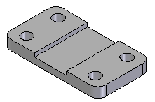
Although Solid Edge makes it easy to edit parts during the design cycle, the first part you place in the assembly should be as completely modeled as possible. In the same way, although it is easy to delete parts from assemblies and change assembly relationships, the first part you place should remain grounded and not be deleted.
To reposition the first part, you should first delete the ground relationship. You can then apply assembly relationships between the first part and the assembly reference planes or subsequent parts you place in the assembly.
Placing additional components in an assembly
Additional assembly components can be placed by dragging them from the Parts Library, Assembly PathFinder, or Windows Explorer and dropping them into the assembly window.
You can use the Assembly tab on the Options dialog box to specify whether subsequent parts are temporarily placed in the assembly window (A), or displayed in a separate part placement window (B).
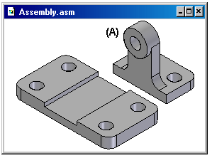
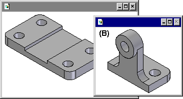
When you set the option Do Not Create a New Window During Place Part, the part is temporarily placed in the assembly window at the location where you dragged and dropped the part. To make the positioning process easier, drop the part in a location where it is easy to select the positioning elements you want to use. If you start the part placement process by double-clicking the part in the Parts Library tab, the display area of the assembly window is adjusted so you can see the new part.
When you clear the option Do Not Create a New Window During Place Part, the part is displayed in a separate part placement window. If the active window is maximized, the part placement window is also maximized, essentially hiding the assembly window from view. Due to this, beginning users should not maximize the active window. Let the windows overlap because this makes placing parts into the assembly and applying relationships much easier.
Positioning parts
You use assembly relationships to position the new part relative to a part already in the assembly. The Relationships Types option on the Assemble command bar contains a wide range of assembly relationships for positioning parts relative to one another.
In addition to traditional assembly relationships, the FlashFit option reduces the steps required to position a part using the mate, planar align, or axial align relationships. This option is recommended in most situations. For example, you can use FlashFit to mate a face on the placement part (A) with a face on the target part (B).
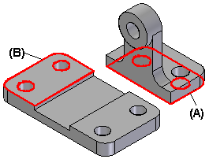
After you apply the first assembly relationship, the new part is repositioned within the assembly.
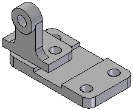
As you apply the remaining assembly relationships, the software positions and reorients the part in the assembly.
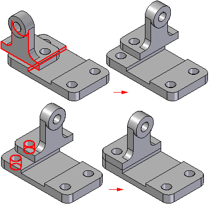
Additional parts can be positioned relative to any part in the assembly, or even relative to more than one part in the assembly. You can also position a part relative to an assembly sketch.
For more information on positioning parts using assembly relationships, see the Assembly Relationships Help topic.
By default, Solid Edge maintains the relationships with which you position the part. If you clear the Maintain Relationships command on the Parts Library shortcut menu, the relationships are used only for positioning, and the part is grounded. Grounded parts do not update their positions when you make design changes.
Placing parts that are not fully positioned
It is best to fully position parts as you place them into assemblies. Fully-positioned parts update their positions more predictably when changes are made. At times, though, you may want to place a part without fully positioning it. For example, you may be placing another part later that will be used to complete the positioning of both parts.
You can use the Esc key to interrupt the placement sequence at any time. If no relationships have been applied, the part is placed in the assembly at the same relative position it occupies in the part document. In other words, the part is placed in the assembly such that the base reference planes in the part document (A) are coincident with the base reference planes in the assembly (B).
If you set the option Do Not Create a New Window During Place Part, the part is placed in the assembly at the location where you dragged and dropped it into the assembly.
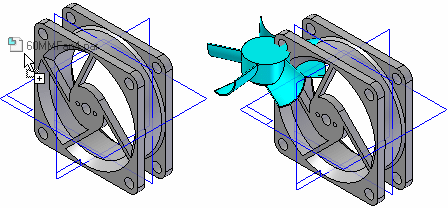
If you cleared the option Do Not Create a New Window During Place Part, the part is placed in the assembly such that the base reference planes in the part document (A) are coincident with the base reference planes in the assembly (B).
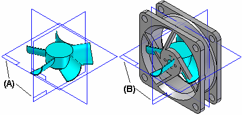
You can also interrupt the placement process by selecting another command, for example, the Select tool.
Placing the same part more than once
If you want to place the same part in an assembly more than once, you do not have to use the Parts Library tab every time. After you place the part the first time, you can select it, copy it to the Clipboard, and then paste it into the assembly.
When you select the Paste command, the part is displayed in a separate window, as if you had selected it from the Parts Library tab. You can then apply assembly relationships between the new part and the other parts in the assembly.
You can also use PathFinder to place an existing part into an assembly again. Select the part in PathFinder, then drag and drop it into the assembly window.
If a part is being placed in the assembly several times using the same relationship scheme, you can use the Capture Fit command to store the relationships and faces used to position the part the first time. This reduces the number of steps required to define each relationship when you place the part again. When you place the part later, you do not need to define which relationship and face you want to use on the placement part. You only need to select a face on the target part in the assembly for each relationship.
Positioning a set of parts
You can use the Assemble command to position a set of parts relative to each other without fully constraining each part in an ordered sequence. This type of workflow can make it easier to position a set of interrelated parts, such as when building a mechanism.
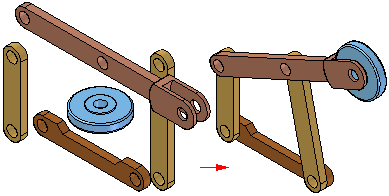
First, drag and drop the set of parts into the assembly. Then click the Assemble command and apply relationships between one part and the other parts. To position a different part, right-click.
Finding parts
If you do not know the name and location of a part or subassembly, you can define search criteria using the Search button on the Parts Library tab. You can then double-click the name of the part or subassembly from the list of search results to start the part placement process.
Part-placement properties
When you place a part or subassembly into an assembly, Solid Edge sets properties that determine the following:
-
The placement name of a part or subassembly.
-
Whether the part is selectable or not.
-
The quantity of the part.
-
The x, y, and z location for grounded parts or parts not positioned using assembly relationships.
-
Whether the part is displayed in a higher-level assembly.
-
Whether the part is displayed in a drawing of the assembly.
-
Whether the part is considered a reference part in a drawing or parts list.
-
Whether the part is used in a report, such as a Bill of Material.
-
Whether the part is used in mass property calculations of the assembly.
-
Whether a part is used in an interference analysis calculation.
You can also change these properties later using the Occurrence Properties button on the Place Part command bar or the Occurrence Properties command when selecting assembly components.
Placing simplified parts
The Use Simplified Parts command on the Parts Library shortcut menu allows you to specify whether you want to use the simplified or designed version of a part when placing it in the assembly. When you have the Use Simplified Parts command set (there is a check mark adjacent to the command), any faces that were deleted when simplifying the part will not be available for positioning purposes. To make these faces available, clear the Use Simplified Parts command.
Placing parts with predefined relationships
You can automatically place a part multiple times using named group references. You must use the Assign Capture Fit command in the part environment to predefine the relationships, which will be used to place the part in Capture fit or Auto-Assemble mode. Being able to place parts with predefined relationships increases productivity by decreasing the time and effort required to place parts.
There are three modes for placing parts with predefined relationships:
- Assemble
-
Places parts by selecting source and target elements of the part.
- Capture fit
-
Places parts using capture fit relationships by selecting the target elements.
- Auto-Assemble
-
Select parts containing predefined relationships. You can select the target groups one at a time or use the Identify Targets option to identify target parts and then place multiple occurrences of the part at one time using named match group references.
Toggle target part group selection
Use the Identify Targets option to see the visual feedback for matching targets.
A green symbol indicates that you want to place a part at that location.
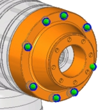
If you do not want to place a part at that location, click the Toggle Component Selection option and then click the target part that you do not want to include in the part placement. The symbol becomes red and the parts are not placed.
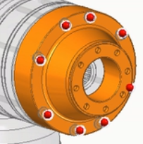
Using polarity when placing parts
Using polarity is helpful when placing additional occurrences of the same part that contains the same group name and relationships after that part has already been placed.
For example, Assign Capture Fit was used to place the two allen screws into the flange.
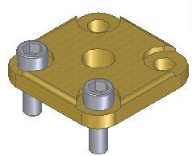
Now, place the same part that contains the same group name and relationships.
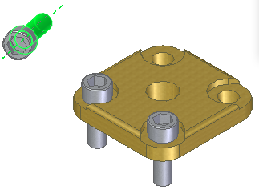
Click the Identify Targets option to display all of the components with matching relationships groups.
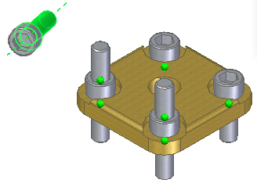
Clearly, these are not the desired results. However, you can use polarity on the placement part to get the desired results.
To do this:
-
Reopen the placement part in the part environment.
-
Choose the Tools tab→Assistant group→Assign Capture Fit button .
-
On the Maintain Relationships dialog box, select S-Pole from the menu.
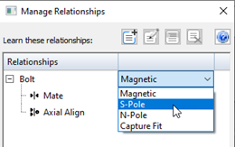
-
Save the part file.
Now when you place the part again in the assembly, notice the part now has a polarity of S-Pole and is placed properly on the accepting part.
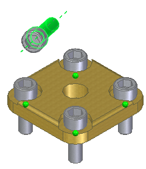
Click the Show Accepting Targets option to see all accepting targets without considering polarity.
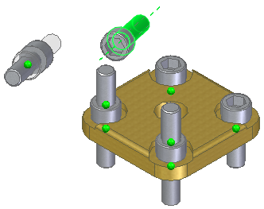
Placing subassemblies
You can place a Solid Edge assembly document into another assembly in much the same way you place an individual part. When placing an assembly, in the Place Part window, you must first select the placement part in the assembly you want to use for positioning purposes, then select the face on the part.
If you are placing a large subassembly, you can save a display configuration in the subassembly first, then use this configuration to make placement easier. For example, you can hide all the parts, except those that will be used to position the subassembly. Before you place the subassembly, make sure the Use Configuration command on the shortcut menu is set. Then, when you place the subassembly, you can select the configuration name from the Configuration list on the Use Configuration dialog box. Subassemblies also place faster if parts have been hidden.
When placing a subassembly using FlashFit or the Reduced Steps mode, the placement part step is skipped. You specify the placement part by selecting a face on the placement part you want.
When placing parts into a subassembly, you can set an option that controls whether the part is displayed in higher-level assemblies. If the option Display When Assembly Is Attached As Subassembly on the Properties dialog box is cleared for a part, that part is not be displayed in PathFinder or the graphics window in higher-level assemblies.
Placing subassemblies with predefined relationships
You can place a subassembly with predefined relationships into another assembly in much the same way you place an individual part with predefined relationships. This increases productivity by decreasing the time and effort required to place subassemblies.
Locating parts
The parts and subassemblies used to build an assembly can be located on different computers on a network. To locate a part or subassembly, you can use the Assembly Statistics command on the Inspect tab to display the document name and location. When the Assembly Statistics dialog box is displayed, select any document in the list, right-click, and then set the option Show Document Name and Location.
Non-graphic parts
Sometimes you need to place parts in assemblies that have no model associated with them, so they can be documented in a parts list or bill of materials. For example, items such as paint, grease, oil, and so on require no model, but a part must exist in the assembly for them to show up in the documentation for the assembly. Solid Edge allows you to create non-graphic parts by adding custom properties to an empty part document. You can then place the part in the assembly without positioning it with assembly relationships, by pressing the Shift key, then dragging the part into the assembly.
How do I
Insert a part from 3Dfind.itAssemble several parts in an assembly
Display reference elements in the Place Part window
Place a part in an assembly
Capture the assembly relationships for a part
Create predefined relationships on a part or subassembly
Place parts or subassemblies with predefined relationships
Add assembly relationships to parts in an assembly automatically
Delete an assembly relationship
Flip a part in an assembly
Look up more details
Insert ComponentInserting components from 3Dfind.it
Clone Component command
Clone Component command Options dialog box
Clone Component command bar
Assemble command
Place Part command bar
Capture Fit command
Capture Fit Dialog Box
Assign Capture Fit command
Assign Capture Fit command bar
Manage Relationships dialog box
Assemble command bar
Assemble command bar Options dialog box
Relationship Assistant Settings dialog box
Relationship Assistant Options dialog box
Assembly Relationship Assistant command bar
Assembly Relationship Assistant command
Delete Relationship command (Assembly Environment)
Maintain Relationships command (Parts Library Tab)
Flip Command